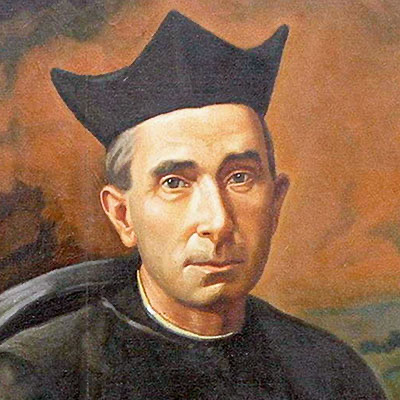
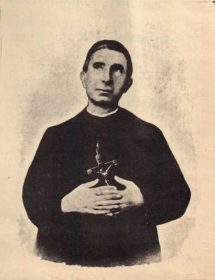

Isusovački blaženici
Svećenik
Bl. Tiburcije Arnaiz Muñoz
1865. – 1926.
Španjolski svećenik i isusovac posvetio se pučkim misijama, duhovnim vježbama te siromašnima u Málagi, povezujući navještaj vjere s brigom za svakodnevne potrebe.
Tekst je preveden i prilagođen uz pomoć umjetne inteligencije.

Izvor slike


Izvor slike
- Spomendan
- 2. srpnja
- Zaštitništvo
- Nije navedeno u izvoru
- Životni vijek
- 1865. – 1926.
- Djelovanje
- Misije i evangelizacija · Duhovno vodstvo i razlučivanje · Siromašni i isključeni
- Razdoblje
- 19., 20. stoljeće
- Ulazak u Družbu
- 1902., Granada
- Datum rođenja
- 11.08.1865.
- Mjesto rođenja
- Valladolid, Španjolska
- Datum smrti
- 18.07.1926.
- Mjesto smrti/mučeništva
- Málaga, Španjolska
- Okolnosti smrti/mučeništva
- Umro nakon bolesti tijekom intenzivnoga misionarskog rada.
- Uloga
- Svećenik
- Mučenik
- Ne
- Ostale oznake
- Misionar u Španjolskoj; Pučki misionar; promicatelj seoske kateheze
- Pripadnost
- Isusovac
- Drugi oblici imena
- Tiburcio Arnaiz Muñoz · Tiburcio
Životopis
Tiburcio Arnaiz Muñoz rođen je 1865. u Valladolidu. U malo sjemenište ušao je s trinaest godina, a kao mladi svećenik potom služio u pokrajinama Valladolid i Ávila. U Toledu je doktorirao teologiju 1896. Nakon majčine smrti ostvario je želju za redovničkim životom: 1902. pristupio je isusovačkom novicijatu u Granadi. Duhovne vježbe i pučke misije postale su glavna područja njegova novoga poslanja.
Potjecao je iz skromne obitelji tkalaca i rano ostao bez oca. Kao sjemeništarac pomagao je obitelji sakristanskom službom kod dominikanki. Zaređen je 20. travnja 1890.; župama Villanueva de Duero i Poyales del Hoyo služio je tri, odnosno devet godina. Prve isusovačke zavjete položio je 1904., završnu pripravu obavio u Loyoli, a posljednje zavjete u Málagi 1912. U Murciji je već tražio smještaj i duhovnu potporu djevojkama koje su dolazile raditi iz sela.
U Málagi je razvio suradnju sa ženama koje su u siromašnim dvorišnim naseljima otvarale male škole. Poučavale su čitanje, pisanje i vjeru, a on bi poslije dolazio održati misije. Brinuo se da netko ostane čuvati postignuto. Iz toga se razvilo i djelo ruralnih pouka, s privremenim boravkom suradnica u selima. Navještaj se tako povezivao s obrazovanjem i trajnom prisutnošću.
Njegov svakodnevni raspored obuhvaćao je ispovijedanje, duhovno vodstvo, pomoć sjemeništu, zatvorenike, bolesnike i djecu s ulice. Promicao je Marijine kongregacije, Apostolat molitve, noćno klanjanje i karitativne konferencije svetoga Vinka. Pokretao je škole, katoličku knjižnicu, raspodjelu lijekova i prihvatne kuće. Nije radio sam: okupljao je ljude različita društvenoga položaja i povjeravao im konkretne zadatke. Umro je 18. srpnja 1926.
Tekst je preveden i prilagođen uz pomoć umjetne inteligencije.
Pročitaj više na izvornoj stranici ↗